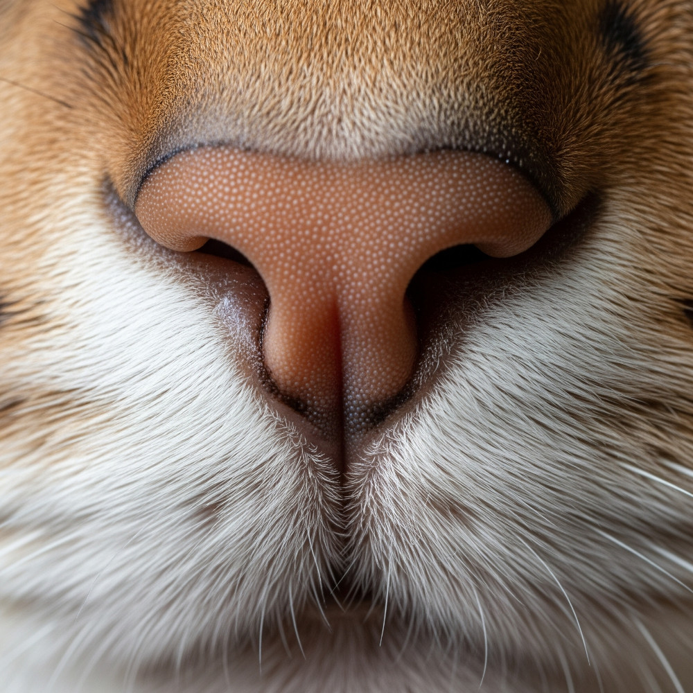

O Olfato dos Gatos e o Mundo Vegetal: Uma Abordagem Abrangente

O mundo dos gatos é uma tapeçaria rica em sensações, e o olfato desempenha um papel central na forma como esses felinos percebem e interagem com o ambiente. Longe de ser um sentido secundário, o olfato felino é uma ferramenta sofisticada que molda seu comportamento, suas preferências e até mesmo suas reações mais peculiares. Enquanto os humanos contam com aproximadamente 5 milhões de células olfativas, os gatos superam essa capacidade com mais de 200 milhões. Essa diferença colossal significa que aromas que para nós são imperceptíveis ou sutis, para um gato podem ser experiências intensas, informativas ou até mesmo avassaladoras.
Essa acuidade sensorial não se limita apenas à detecção de cheiros comuns. O sistema olfativo dos gatos é uma maravilha da evolução, permitindo-lhes navegar por um mundo de informações químicas que influenciam desde a caça e a comunicação social até a exploração de novos territórios e a interação com o reino vegetal. Compreender a complexidade desse sentido é fundamental para tutores que desejam criar um ambiente enriquecedor e seguro para seus companheiros felinos, especialmente quando se trata da presença de plantas.
A Anatomia e o Superpoder Olfativo Felino
A superioridade olfativa dos gatos reside em uma combinação de fatores anatômicos e fisiológicos. A estrutura interna do nariz felino é notavelmente complexa, composta por um labirinto de estruturas ósseas e membranas mucosas que se assemelham a um cromatógrafo de gases em espiral paralelo. Essa arquitetura intrincada permite que o ar inalado seja processado de maneira altamente eficiente. O fluxo de ar é dividido em duas correntes distintas: uma é direcionada para a limpeza e umidificação, enquanto a outra, rica em moléculas odoríferas, é conduzida diretamente para a região olfativa, maximizando a captação de informações químicas.
Além do sistema olfativo primário, os gatos possuem um órgão acessório fascinante: o órgão vomeronasal, também conhecido como órgão de Jacobson. Localizado entre o nariz e a boca, no osso vômer, este órgão é uma estrutura especializada na detecção de feromônios e outras substâncias químicas não voláteis. Essas substâncias carregam informações cruciais para a comunicação intraespécie, incluindo sinais reprodutivos, territoriais e sociais. O órgão vomeronasal atua como um "detector de cheiros especiais", permitindo que os gatos captem nuances químicas que o sistema olfativo principal poderia ignorar.
A Reação de Flehmen: Uma Janela para o Mundo Químico Felino
A forma como os gatos utilizam o órgão vomeronasal é particularmente interessante e muitas vezes divertida de observar: a reação de Flehmen. Este comportamento, que não é exclusivo dos felinos, mas também observado em outros mamíferos como cavalos e tigres, ocorre quando o animal deseja analisar mais profundamente um odor, especialmente feromônios. Feromônios são substâncias químicas secretadas por um indivíduo que influenciam o comportamento de outro indivíduo da mesma espécie, sendo cruciais para a comunicação social, reprodutiva e territorial.
Durante a reação de Flehmen, o gato levanta o lábio superior, franze o nariz e abre ligeiramente a boca, exibindo uma expressão que muitos tutores descrevem como uma "careta" ou "sorriso" engraçado. Esse movimento peculiar não é apenas uma exibição, mas uma ação funcional que permite ao gato aspirar o ar e as partículas de odor para o ducto incisivo, que as transporta diretamente para o órgão de Jacobson. Ao fazer isso, o felino direciona as moléculas de odor para o seu "laboratório químico" interno, obtendo uma análise detalhada da informação química presente no ambiente.
Cheiros que Encantam: O Fascínio Felino pelo Reino Vegetal
Assim como para os humanos, nem todos os aromas vegetais são iguais para os gatos. Algumas plantas liberam compostos que atuam como verdadeiros atrativos, ativando áreas de prazer no cérebro felino e provocando reações de euforia e bem-estar. A mais célebre dessas plantas é a Nepeta cataria, popularmente conhecida como catnip ou erva-gateira. Seus óleos voláteis, especialmente a nepetalactona, podem induzir em muitos gatos um estado de excitação, brincadeiras intensas, rolamento, miados e até mesmo ronronar em excesso.
No entanto, a sensibilidade ao catnip é geneticamente determinada, e nem todos os gatos reagem da mesma forma; estima-se que entre 50% e 70% dos felinos apresentem resposta a essa planta. Para aqueles que não são afetados pelo catnip, outras opções podem despertar o mesmo fascínio, como a valeriana (Valeriana officinalis), o silver vine (Actinidia polygama, também conhecido como matatabi), e certos tipos de hortelã-gato (Teucrium marum).
Cheiros que Afastam: Repelentes Naturais e Precauções
O olfato aguçado dos gatos também os torna sensíveis a aromas que consideram desagradáveis ou ameaçadores, levando-os a evitar certas áreas ou objetos. Essa aversão pode ser usada com cautela para proteger plantas ou redirecionar comportamentos.
- Cítricos: O cheiro de limão, laranja, tangerina etc. é aversivo.
- Vinagre: O odor ácido desencoraja arranhaduras e invasões.
- Especiarias: Canela e cravo, agradáveis aos humanos, são irritantes.
- Aliáceos: Alho e cebola são tóxicos e evitados pelo cheiro.
Importante: o uso excessivo desses repelentes pode causar estresse, irritação nasal, e até intoxicação. Use sempre com moderação.
Aromas Perigosos: O Risco dos Óleos Essenciais
Muitos óleos essenciais populares entre humanos são perigosíssimos para gatos. O fígado felino não metaboliza bem compostos como fenóis e monoterpenos por deficiência enzimática, o que pode levar à intoxicação mesmo por inalação.
- Tea Tree (Melaleuca): Tremores e depressão.
- Eucalipto: Irritação respiratória e hepática.
- Lavanda: Contém linalol e acetato de linalila (tóxicos).
- Hortelã-pimenta: Sobrecarga hepática.
- Cravo e Canela: Altamente concentrados e perigosos.
Evite difusores, velas perfumadas e aromatizadores com óleos em ambientes com gatos.
Criando um Ambiente Aromático e Seguro para Gatos
- Plante catnip, valeriana ou silver vine em vasos acessíveis.
- Evite produtos sintéticos e aromáticos agressivos.
- Use ventilação natural ou purificadores sem perfume.
- Ofereça ramos frescos (com supervisão) como alecrim ou manjericão.
A Importância da Observação Comportamental
Observe os sinais do seu gato: curiosidade, aproximação tranquila e bem-estar indicam conforto com os cheiros. Já salivação, espirros, lambedura compulsiva, apatia ou vocalização excessiva indicam alerta. Remova a fonte e, se necessário, consulte um veterinário.
Um Mundo de Odores a Ser Desvendado
O olfato do gato é uma porta de entrada para um universo invisível de mensagens químicas. Conhecer e respeitar esse mundo é essencial para garantir um lar seguro, estimulante e cheio de harmonia para humanos e felinos.